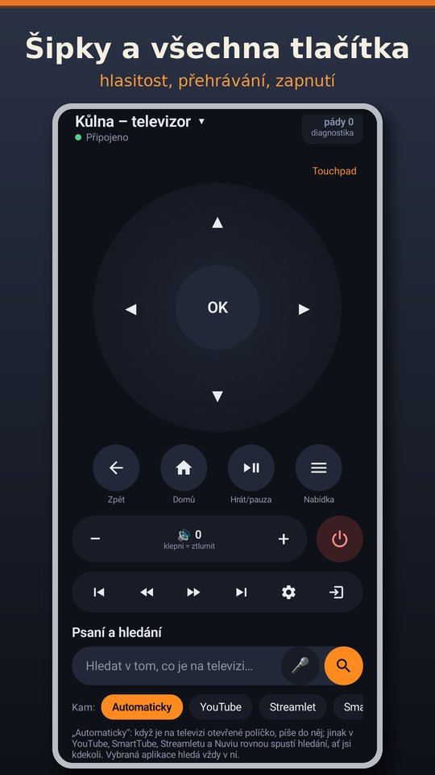
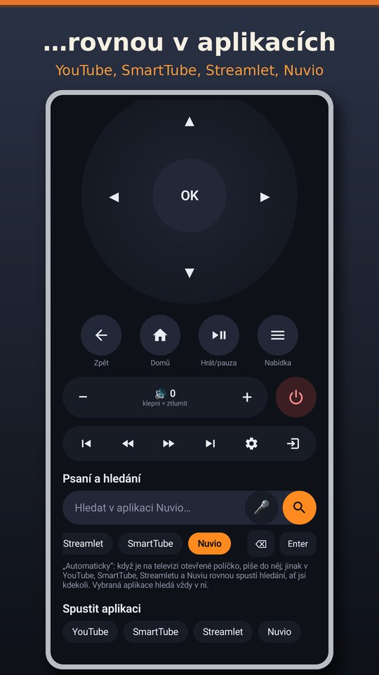

Telka v kapse
Ovladač televize v mobilu pro Google TV a Android TV
Touchpad nebo šipkyPřejeď prstem a kurzor na televizi se posune, ťukni a je to OK.
Psaní a hlasPiš klávesnicí mobilu nebo mluv – do jakéhokoli políčka na televizi.
Hledání odkudkoliVýsledky rovnou v YouTube, SmartTube, Streamletu nebo Nuviu.
Zapnutí z mobiluI z hlubokého spánku – přes Google Cast nebo Wake-on-LAN.
Spolehlivé spojeníKdyž síť zakolísá, ovladač se potichu připojí znovu a stisk se neztratí.
Bez reklam a účtůAplikace mluví jen s tvou televizí v domácí síti.



